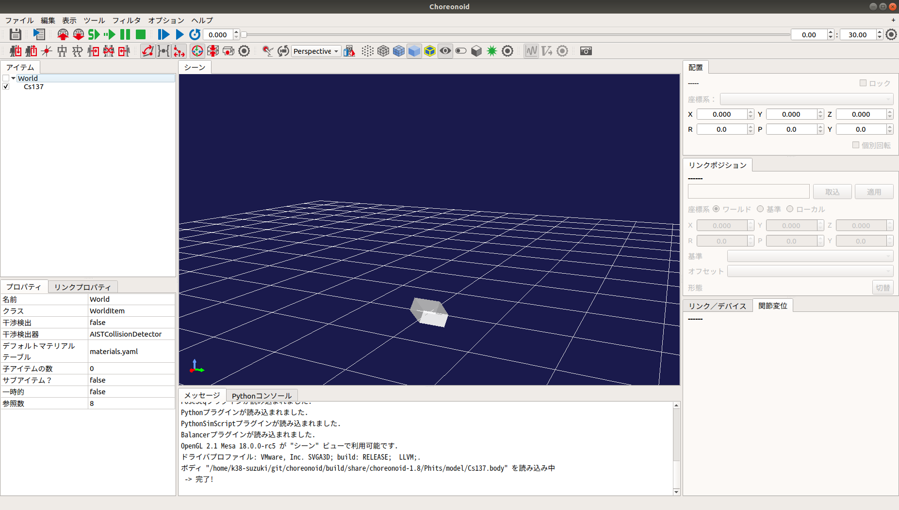
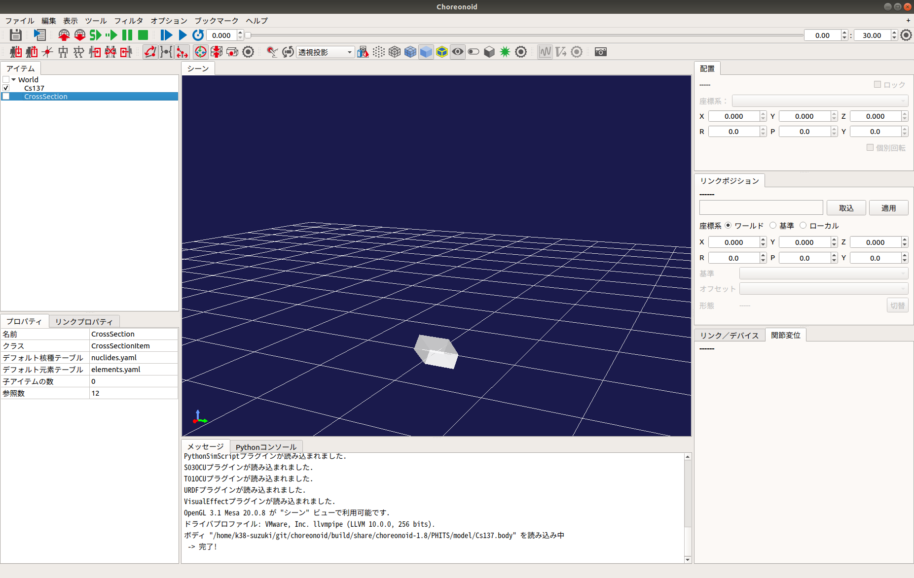
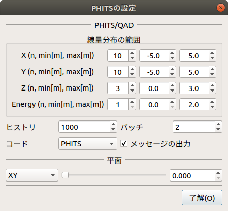
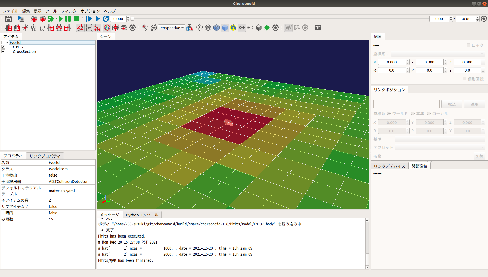
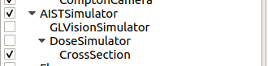
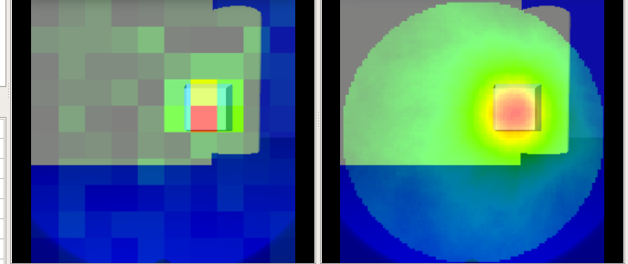

PHITS Plugin
This section explains how to calculate and visualize radiation behavior using the PHITS plugin. Before using the PHITS plugin, you must obtain and install the "PHITS code." For information on how to obtain it, please refer to How to obtain PHITS code (including executable format, source program, manual, etc.).
Build Configuration with CMake
First, update the Makefile using the cmake command. In the Choreonoid build directory, run:
cmake ..
This will check for required libraries and update the Makefile. (Note the period after the cmake command.)
Next, enable the PHITS plugin. Run the ccmake command in the Choreonoid build directory:
ccmake ..
Then, set BUILD_PHITS_PLUGIN to "ON".
Building and Installing Choreonoid
If the Makefile is successfully generated by CMake, build Choreonoid using the make command. For details on building and installing Choreonoid, please refer to the Choreonoid Build Manual.
Calculating Dose Rate Distribution
To calculate dose rate distribution, use Body items (dynamic models) and "Dose Distribution Items." First, set the "Radiation Source" or "Shielding Material." In this function, by adding attributes for "Source" or "Shielding" to each link, that link is treated as a radiation source or shielding object. The parameters for adding these attributes are as follows:
Parameter |
Default Value |
Unit |
Meaning |
|---|---|---|---|
nuclide |
-, - |
-, Bq/cm³ |
Specifies the nuclide (Cs-134, Cs-137, Co-60). Nuclides can be added by editing |
objectType |
0.0, 0.0, 0.0 |
m, m, m |
Specifies the object type (Source: SRC_BOX, SRC_CYLINDER, SRC_SPHERE; Shielding: OBS_BOX, OBS_CYLINDER, OBS_SPHERE). |
material |
- |
- |
Specifies the material composition (Air, Water, Concrete, Tungsten, Lead, Iron, Soil, GAGG). Materials can be added by editing |
sourceDivision |
-, -, - |
-, -, - |
Specifies the number of divisions for the source (BOX[x, y, z], CYLINDER[r, phi, z], SPHERE[r, phi, theta]). QAD only. |
buildupFactor |
- |
- |
Specifies the buildup factor (BERY, BORO, CARB, etc.). QAD only. |
Next, place the "Source" or "Shielding" in the world. Select "File" - "Open" - "Body" from the main menu and load the Body item with the source/shielding attributes. Then, set the initial position using the "Location" view.

Next, calculate the dose rate distribution. Select "File" - "New" - "Dose Distribution" from the main menu to generate it. Place the generated Dose Distribution item as a child of any item.

Right-click the Dose Distribution item in the Item Tree. Select "PHITS Settings" from the popup menu to display the following dialog:

After completing the settings, close the dialog, right-click the Dose Distribution item again, and select "PHITS" - "Start." PHITS/QAD will execute based on the parameters. Once the calculation is complete, the dose rate distribution will be displayed in the world. Unchecking the item in the tree will hide it.

The dialog parameters are detailed below:
Parameter |
Default Value |
Unit |
Meaning |
|---|---|---|---|
X / Y / Z |
3, -1.0, 1.0 |
-, m, m |
Range of dose distribution (Divisions, Min, Max) for each axis. |
Energy |
1, 0.0, 10.0 |
-, ?, ? |
Energy range (Divisions, Min, Max). |
History |
1000 |
- |
Statistical accuracy for PHITS or QAD calculations. |
Batch |
2 |
- |
Number of trial runs for PHITS or QAD. |
Code |
PHITS |
- |
Specifies the calculation code to use (PHITS / QAD). |
Output Messages |
checked |
- |
Toggles message output. |
Reset |
- |
- |
Clears the PHITS/QAD input file path. |
Plane |
XY, 0.000 |
-, m |
Orientation (XY, YZ, ZX) and representative coordinate of the dose distribution plane. |
Obtaining Cumulative Dose
To obtain the cumulative dose, use the "Dose Simulator Item" and the "DoseMeter" device. Describe the DoseMeter under the elements of any link, similar to a camera or light.
-
type: DoseMeter
name: DoseMeter
material: LEAD
thickness: 3
offsetDose: 3.0
Key details:
Parameter |
Default Value |
Unit |
Meaning |
|---|---|---|---|
type / name |
- |
- |
Device type and name. |
material |
- |
- |
Shielding material (LEAD, IRON, CONCRETE). Addable via |
thickness |
- |
- |
Thickness of the shielding material. |
offsetDose |
- |
uSv |
Initial value of the cumulative dose. |
Next, select "File" - "New" - "Dose Simulator" and place it as a child of the AIST Simulator item. Set the Dose Distribution item to be used for calculation as a child of the Dose Simulator.

When you run the simulation, the cumulative dose is calculated and the DoseMeter state is updated. The value can be retrieved via integralDose() in the DoseMeter class.
Generating Pinhole / Compton Camera Images
Use the "Gamma Imager Item" and "PinholeCamera" / "ComptonCamera" devices.
-
type: PinholeCamera
name: PinholeCamera
... (omitted for brevity)
resolution: [ 10, 10 ]
material: Tungsten
thickness: 3.0
pinholeOpening: 0.5
(Details for ComptonCamera parameters like elementWidth, scattererThickness, and arm follow a similar logic for resolution and material composition.)
Next, open the "Image View" from "View" - "Show View" - "Image" and the "Image View Bar" from "View" - "Show Toolbar."
Select the body with the gamma camera in the tree, then create a "Gamma Imager" item. Child items for the cameras will be generated automatically. Also, create a "GL Vision Simulator" as a child of the AIST Simulator.
Run the simulation and select the camera from the Image View Bar. Finally, right-click the Pinhole/Compton child item, select "PHITS Settings" to configure, and then "PHITS" - "Start" to generate the gamma image.
